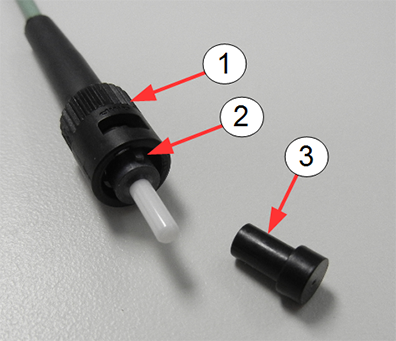
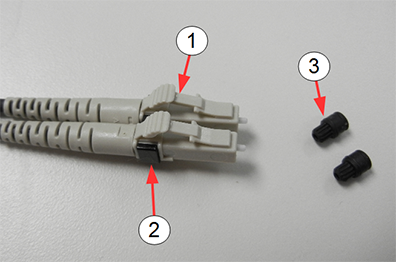
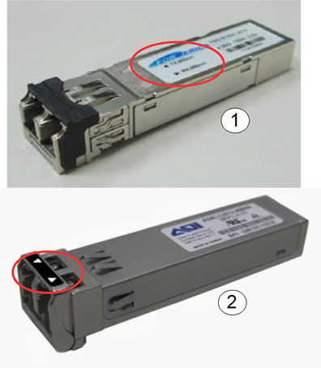
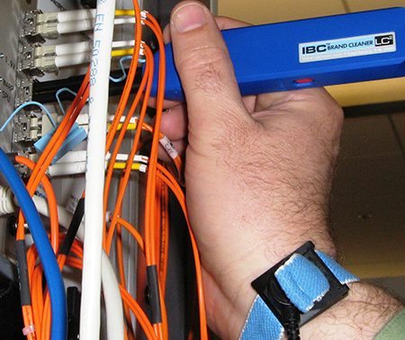
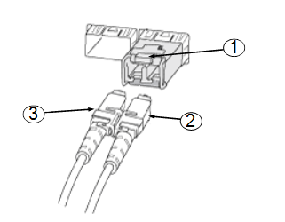
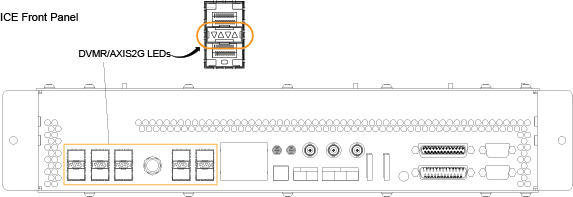
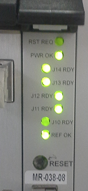
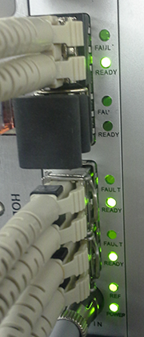

Fiber Optic Devices Installation and Replacement
Prerequisites
Overview
Fiber optic cables can easily be damaged if they are improperly handled during installation or during the replacement of connectors. Proper cleaning is required because microscopic contamination in the fiber connection will cause intermittent signals, due to degraded signal power, resulting in failure of the component or failure of the whole system.
This procedure describes the types of fiber optic devices used in MR and how to properly handle and clean both the fiber optic cable ends and the ferrules on the connectors.
Two types of connectors are used:
-
ST bayonet connectors used for the 80 MHz clock
Figure 1. ST Bayonet Connector

-
LC connectors used with SFP fiber optic transceiver
Figure 2. LC Connector

The LC connector is used with the SFP (small form-factor pluggable) optical transceiver. The SFP is a compact fiber optic transceiver used by multiple subsystems in an MR system for the transmission of data. These devices can transmit high rates of data without the concern of noise being induced in the fiber optic cables which join these devices.
The SFP is very sensitive to electrostatic discharge. When handling any of these devices, use proper ESD procedures to prevent early failure.
Figure 3. Small Form-factor Pluggable (SFP) Fiber Optic Transceiver

1 Bend Radius of Fiber Optic Cable
Avoid twisting, squeezing, pinching, or bending the fiber optic cable beyond the specification for fiber optic cable. Sometimes damage does not manifest itself until much later. Even minor damage (not visible damage) can result in dB signal loss due to scattering and refraction of the light through the cable. Fiber optic cable needs a clear path for transmission of high speed data. See DOC1465935 in the online documentation library for the maximum bending radii of both riser/plenum cables and simplex/duplex fiber optic cables.
-
Avoid letting the fiber optics hang, causing a sharp bend in the cable.
-
Avoid letting anything compress the cable, causing kinks, such as routing the cable under ATE equipment or placing the cable in a position to be pinched or stepped on.
2 Cleaning Fiber Optic Cables, Connectors, and SFP Optical Transceiver
Procedure
 caution
caution- caution
- notice
- Confirm that all power has been removed from the unit or subsystem where you will be working. If necessary, perform lockout/tagout (LOTO) on any systems in the area.
- Handle the fiber optic cable in a clean, dust-free environment.
Confirm that your hands are free from dirt and oil.
To avoid recontamination or damage to the optical coating on the fiber optic cable, observe the following best practices:
-
Do not scrub the fiber optic cable with the wipe or clean the same surface more than once.
-
Never blow on the fiber optic cable end.
-
Never use material not specifically manufactured for optical cleaning, such as a tissue or shirt tail, because these fibers scratch and transfer impurities.
-
Never reuse a wipe or swab, because it could transfer dirt or oil from one connector to another.
-
Avoid contamination of clean materials by keeping lint-free non-woven fabric and cleaning swabs in a clean, sealed container.
-
- Remove the protective cap (if present) from the end of the fiber optic cable.
- Follow the cleaning instructions in the Fluke Fiber Optic Cleaning
Kit. You can clean the SFP and fiber in place as shown. Use the cube
and solvent pen to clean an ST bayonet connector.
Figure 4. Cleaning a SFP in Place

note:The MPO-MTP cleaner is not used in any MR procedures. It is used with PET/MR.
- If the transceiver, connector, or cable is not to be immediately deployed, recap with the protection cap.
 |
|
 |
3 ST Bayonet Connector
The ST bayonet connector is used on the 80 MHz clock (BNC).
3.1 Connect Fiber Optic Cable to ST Bayonet Connector
Procedure
- Remove the protective cap on the ST bayonet connector (if present) (seeFigure 1).
- Clean the end of the fiber optic cable and the ferrule of the ST bayonet connector using the cube and the solvent pen per instructions on the laminated card in the Fluke Fiber Optic Cleaning kit..
- Align the slot on the inner sleeve of the connector with the alignment pin above the ferrule on the cable.
- Gently push the cable into the connector. Do not force.
- Turn the connector clockwise until it locks into place.
3.2 Extract Fiber Optic Cable from ST Bayonet Connector
Procedure
- Gently push the cable into the connector and twist the connector counterclockwise until it unlocks. Do not force.
- Gently remove the cable from the bayonet ferrule.
- Insert the protective cap on the connector if the connector is to be left unattended for any length of time.
4 LC Connector and SFP Transceiver
4.1 Connect LC Connector to SFP Transceiver
Procedure
- Remove the protective caps on the LC connectors (see Figure 2).
- Remove the protective plug from the SFP transceiver.
- Clean the LC connector and SFP transceiver (see Cleaning Fiber Optic Cables, Connectors, and SFP Optical Transceiver).
- Insert the LC into the SFP until it contacts the bottom of the
SFP.
- Grasp the upper exposed plastic LC housing (not rubber boots
on fiber cables) and press down to begin seating the LC into the SFP.
Figure 5. LC Connector and SFP Transceiver

- Use your finger nail to press the black clip to finish seating the LC connectors into the SFPx`.
Figure 6. Pressing Black Clip to Lock LC Connector in SFP

- Grasp the upper exposed plastic LC housing (not rubber boots
on fiber cables) and press down to begin seating the LC into the SFP.
- Confirm that the LC connector is locked in place by gently attempting to pull it out.
4.2 Remove LC Connector from SFP Transceiver
Procedure
- While holding down the locking mechanism on the LC connector, gently pull out the LC connector from the SFP transceiver.
- Insert the protective cap on the connector, if the connector is to be left unattended for any length of time.
- Insert the protective plug on the SFP transceiver, if it is to be left unattended for any length of time.
5 Confirm Good Connections
Procedure
-
(For ICE) Observe the LEDs on the ICE.
Figure 7. LEDs on ICE

-
(For IRF3 board) Observe the LEDs on the IRF3
board. Figure 8 shows J14, J13, J12 and J11 lit. The LEDs are bright green. If
the LED is a dim green, the connection is not ON.
In the illustration below, the LED for J10 is dim, indicating J10 is down. It is not completely dark because the light bleeds from the other LEDs.
The REF OK LED at the bottom of the board is lit, indicating that there is a good signal for the 80 MHz reference clock coming from the exciter.
Figure 8. LEDs on IRF3 Board

-
(For IXG board) Observe the LEDs on the IXG
board. Figure 9 shows four active links and one unused link. None of the fault
LEDs are lit.
The REF OK LED at the bottom of the board is lit, indicating that there is a good signal for the 80 MHz reference clock coming from the exciter.
Figure 9. LEDs on IXG Board

-
(For SFP transceiver) A common reason for SFP
transceiver failure is a static discharge event. Voltages as low as
400 V have been known to damage the SFP transceiver. Fouled optics
are another common reason. Follow the cleaning procedures in Cleaning Fiber Optic Cables, Connectors, and SFP Optical Transceiver to avoid
contamination of the cable ends and the SFP transceiver.
6 Finalization
Finalization
No finalization steps.